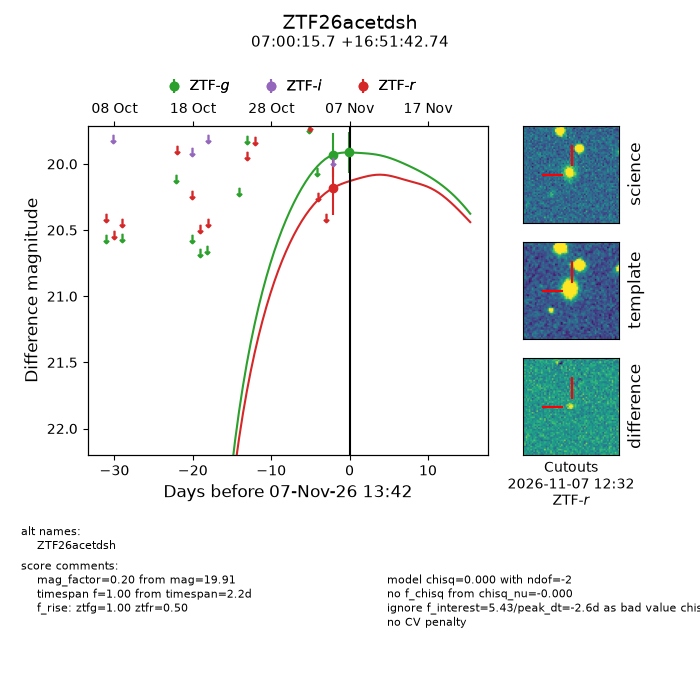
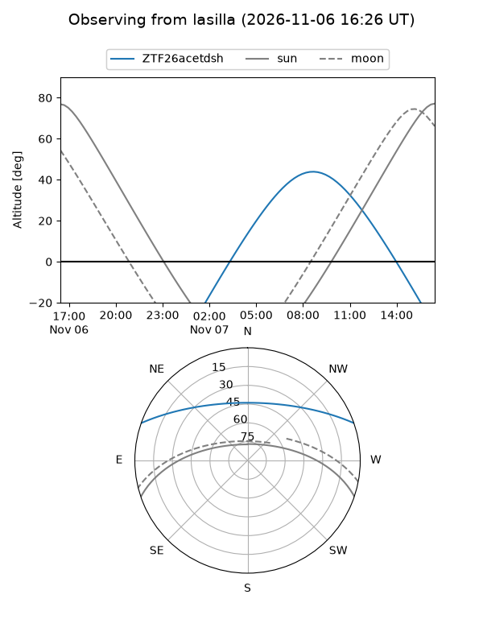
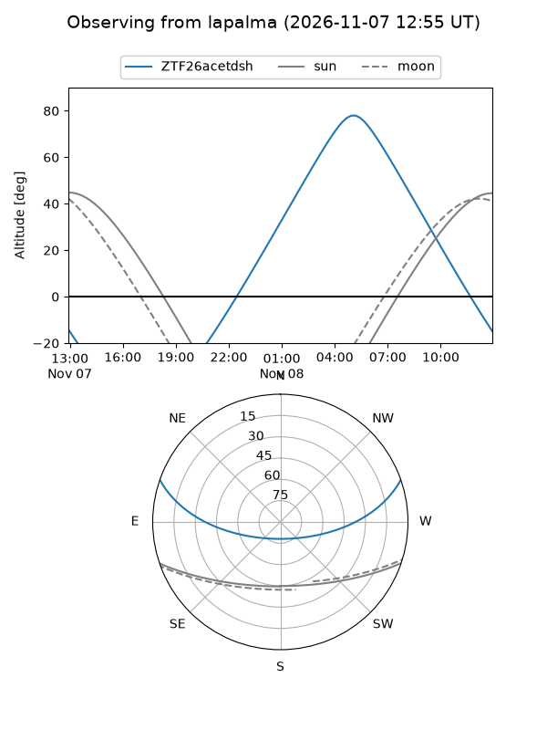
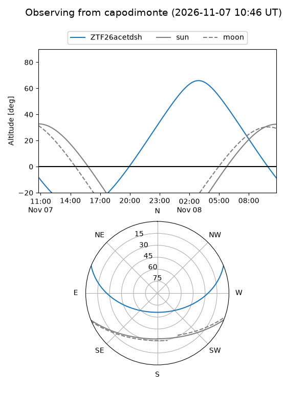
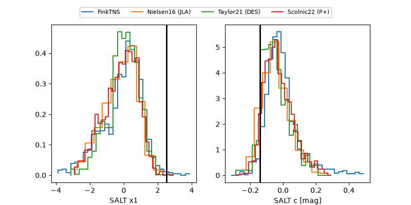

ZTF26acetdsh
Target ZTF26acetdsh at 2026-11-07 13:44
Aliases and brokers:
FINK-ZTF: ztf.fink-portal.org/ZTF26acetdsh
Lasair-ZTF: lasair-ztf.lsst.ac.uk/objects/ZTF26acetdsh
ALeRCE-ZTF: alerce.online/object/ZTF26acetdsh
Direct TNS query: direct search
alt names
ZTF26acetdsh (ztf,fink_ztf)
Coordinates:
equatorial (ra, dec) = 105.0653,+16.86187
equatorial (HMS+DMS) = 07:00:15.67,+16:51:42.74
galactic (l, b) = (198.7669,+9.50000)
Flags:
peak dt: -2.6
Photometry:
last ztfg=19.91, ztfr=20.18
2 ztfg, 1 ztfr detections
Lightcurve

Visibility



Additional plots
